第 12 章
検査
この章では、できあがった形を確かめる機能を説明します。距離・角度・面積を測り、質量と重心を求め、材料と色を割り当て、形状の欠陥を見つけられるようになります。この章の写真は、samples/measure_and_material.mcad（左が鋼の板、右がアルミの箱）と、samples/plate_with_holes.mcad で撮りました。
12.1 検査のコマンド
検査のコマンドは、リボンの［検査］タブと［ツール］タブにあります。
| コマンド | 場所 | できること | 節 |
|---|---|---|---|
| ［計測］ | ［検査］タブ →［計測］パネル | 距離・角度・長さ・面積・半径を測る | 計測 |
| ［物理プロパティ］ | ［検査］タブ →［計測］パネル | 質量・体積・重心・慣性を求める | 物理プロパティ |
| ［領域のプロパティ］ | ［検査］タブ →［計測］パネル | スケッチの閉領域・平らな面の断面の特性を求める | 領域のプロパティ |
| ［エラーを検索］ | ［検査］タブ →［解析］パネル | 形状の欠陥を探す | エラーを検索 |
| ［材料］ | ［ツール］タブ →［材料と外観］パネル | 材料を割り当てる | 材料 |
| ［外観］・［外観をクリア］ | ［ツール］タブ →［材料と外観］パネル | 面・ボディの色と透明度を付ける・消す | 外観 |
クイック アクセス ツールバーの［材料］・［外観］は、［ツール］タブの同じダイアログを開きます。断面で内側を確かめるには、第 2 章の断面図を使います。
［物理プロパティ］・［エラーを検索］・［領域のプロパティ］・［材料］・［外観］のダイアログは、開いたまま、3D ビューとブラウザを操作できます（モードレス）。同じダイアログをもう一度開くと、新しくは開かず、開いているダイアログが前に出ます。複数のダイアログを同時に開くこともできます。
ステータスバーの簡易測定
何も計測のコマンドを使わなくても、ビューで要素を選ぶと、ステータスバーの右に値が出ます。面なら面積、エッジなら長さ、頂点を 2 つ選ぶと距離、複数の面やエッジを選ぶと合計です。

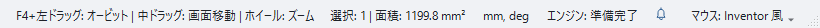
選択: 1 | 面積: 1199.8 mm² と出ます。ステータスバーの値は目安です。正確な値は、計測で測ります。
12.2 計測
計測のツールで、面・エッジ・頂点・作業フィーチャを 1 つか 2 つ選び、値を調べます。
リボンの［検査］タブ →［計測］パネル →［計測］をクリックします。右に［計測］のドックが出ます。
ビューで、1 つ目の面・エッジ・頂点をクリックします。ドックの［選択 1］に名前が入り、その要素の値が出ます。
2 つ目の要素をクリックします。［選択 2］に入り、2 つの間の値が出ます。
図 12-2 2 つの面を選んだところ。［選択 1］（左の板の上面）が緑、［選択 2］（右の箱の上面）が赤紫です。2 つの間に最小距離の線と値が出ます。 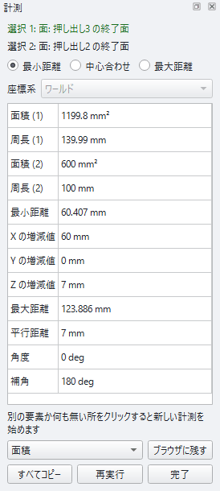
図 12-3 ［計測］のドック。上に選んだ要素、下に値の表があります。 別の要素か何も無い所をクリックすると、新しい計測が始まります。同じ計測をやり直すときは［再実行］、終わるときは［完了］（ビューの右上の［OK］でも同じです）を押します。


| 選んだ要素 | 出る値 |
|---|---|
| 頂点 | X・Y・Z の位置 |
| エッジ | 長さ。円・円弧のエッジは、半径・直径・円弧の長さも |
| 面 | 面積・周長。円筒面・球・トーラス・円錐の面は、半径・直径も |
| ボディ全体 | 体積・面積など |
| 値 | 内容 |
|---|---|
| ［最小距離］ | 2 つの要素の間の最短の距離 |
| ［X の増減値］・［Y の増減値］・［Z の増減値］ | 距離の 2 点の座標の差（X・Y・Z の成分）。ビューには X が赤、Y が緑、Z が青の線で出ます |
| ［最大距離］ | 2 つの要素の間の最も離れた距離 |
| ［平行距離］ | 平行な 2 つの面（直線）の間の距離 |
| ［角度］・［補角］ | 2 つの要素の間の角度と、180° との差（線と線・線と面・面と面・軸） |
距離の測り方を切り替える
ドックの［最小距離］・［中心合わせ］・［最大距離］の切り替えで、ビューに描く距離の線と、増減値の元になる 2 点を替えます。［中心合わせ］は、円・円筒・球の中心どうし、［最大距離］は最も離れた点の組です。

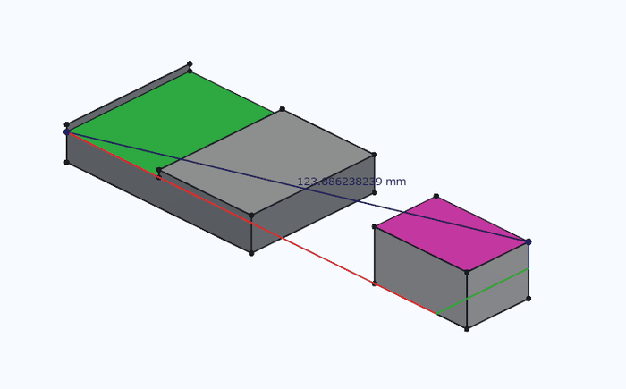
123.886 mm）が替わりました。座標系を指定する
位置と増減値は、ドックの［座標系］で、［ワールド］か、作った UCS（ユーザー座標系）の値にできます。UCS は、リボンの［3D モデル］タブ →［作業フィーチャ］パネル →［UCS］で作ります（第 5 章）。UCS が無いときは、［ワールド］だけです。

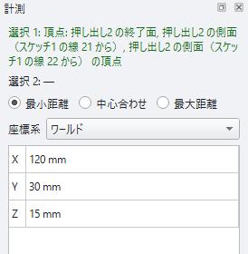
X = 120・Y = 30・Z = 15 です。
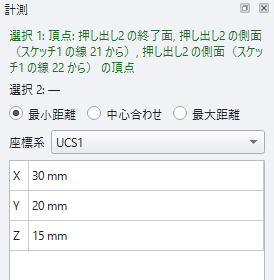
(90, 10, 0) に置いた ［UCS1］ の座標では、同じ頂点が X = 30・Y = 20・Z = 15 です。計測をブラウザに残す
計測の値は、ブラウザに残せます。残した計測は、モデルを変えると値が更新されます。
ドックの下の［ブラウザに残す］の左のコンボボックスで、残す値（［平行距離］など）を選びます。
［ブラウザに残す］を押します。
ブラウザのパーツの下の［計測］フォルダに、［計測1］ のような行が増えます。種類の列に値の種類、状態の列に今の値が出ます。
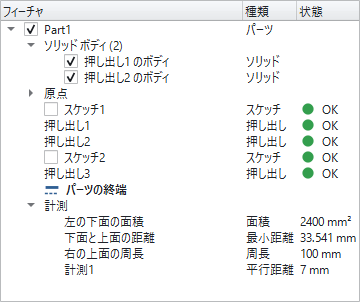
図 12-7 ［計測］フォルダ。題材に入っている 3 つの計測と、今残した［計測1］（［平行距離］）が並びます。

押し出しの距離などを変えると、残した計測の値が自動で更新されます。
測った面やエッジが無くなったときは、値が［見つかりません］の警告になって残ります。計測は削除されません。
名前は、行を選んで F2 で変えます。削除は、行を選んで Del、または右クリックの［計測を削除］です。
ボディ全体と作業フィーチャの計測は、ブラウザに残せません。
残した計測は、ドキュメントに保存されます。

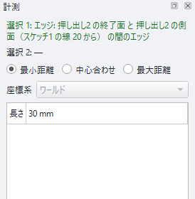
［すべてコピー］は、ドックの内容をテキストでクリップボードに写します。
値の単位は、ドキュメントの単位です（［単位と精度］）。
12.3 物理プロパティ
［物理プロパティ］は、パーツの質量・面積・体積・重心・慣性を求めます。質量は、材料の密度を掛けた値です。
リボンの［検査］タブ →［計測］パネル →［物理プロパティ］をクリックします。ダイアログが開きます。
値が古いとき（形を変えたあと）は、［更新］を押します。ダイアログを開いたまま形を変えると、「
モデルが変わりました。[更新]を押してください。」と出て、値は［N/A］になります。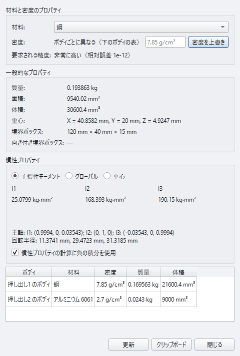
図 12-9 物理プロパティ。左が鋼、右がアルミの 2 つのボディなので、［密度］は ボディごとに異なると出て、下の表にボディごとの値が並びます。

| 項目 | 内容 |
|---|---|
| ［材料］・［密度］ | パーツの材料と密度。コンボボックスで材料を替えられます。材料が無いときは［（既定の材料）］で、密度は 1 g/cm³ です |
| ［要求される精度］ | 計算の精度。非常に高い（相対誤差 1e-12）に固定です。選べません |
| ［質量］・［面積］・［体積］ | パーツ全体の値 |
| ［重心］ | ワールドの原点から見た重心の X・Y・Z |
| ［境界ボックス］・［向き付き境界ボックス］ | 軸に平行な外接箱と、最小の外接箱（向きつき）の大きさ |
| ［慣性プロパティ］ | ［主慣性モーメント］（主軸まわり）・［グローバル］（ワールドの原点まわり）・［重心］（重心まわり）を切り替えます。主軸と回転半径も出ます |
| ［慣性プロパティの計算に負の積分を使用］ | 慣性乗積の符号の決め方です。既定はオンです |
| 下の表 | ボディごとの材料・密度・質量・体積（ボディが複数のとき） |
密度を上書きする
材料を選んだ状態で、［密度］の右の欄に密度を入力します（
8のように単位を省くと、g/cm³です。8000 kg/m^3のような単位付きも書けます）。［密度を上書き］を押します。［更新］を押すと、新しい質量になります。
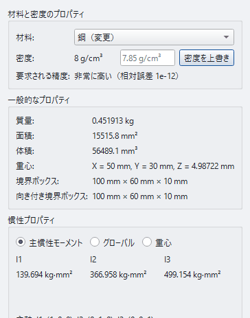
図 12-10 鋼の板の密度を 8 g/cm³に上書きしたあと。材料の表示が鋼（変更）になり、質量は0.451913 kgに変わりました。

［クリップボード］は、値をテキストでコピーします。
質量の単位（
kg・g）は、リボンの［ツール］タブ →［オプション］パネル →［単位と精度］で決めます。材料や外観を替えても、形は再計算されません。質量だけが、新しい密度で求め直されます。
構成のメンバーが材料を上書きしているときは、そのメンバーの材料で計算します（第 11 章）。
12.4 材料
材料は、密度・ヤング率・ポアソン比などの物性と、既定の色を持ちます。質量は材料の密度で決まります。
パーツ全体に割り当てるときは、何も選ばない状態にします。ボディだけに割り当てるときは、ブラウザかビューでボディを選びます。ダイアログを開いたあとでも選び直せて、上の行（割り当て先）が、選択に合わせて変わります。
リボンの［ツール］タブ →［材料と外観］パネル →［材料］をクリックします。
左の一覧で材料を選びます。右に、その材料の物性と出典が出ます。
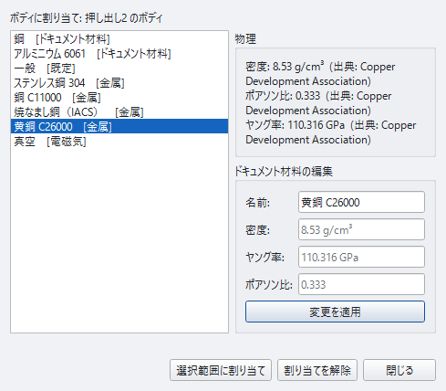
図 12-11 材料のダイアログ。上の行に、割り当て先（ ボディに割り当て: 押し出し2 のボディ）が出ます。［黄銅 C26000］を選んだところです。［選択範囲に割り当て］を押します。ダイアログは開いたままなので、ほかのボディを選んで続けて割り当てられます。終わったら［閉じる］で閉じます。
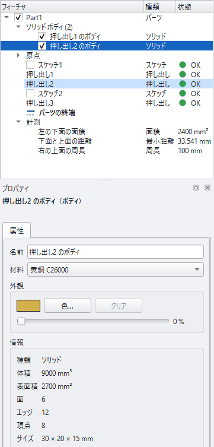
図 12-12 割り当てた後。ブラウザでボディを選ぶと、プロパティ パネルの［材料］が［黄銅 C26000］になり、色も黄銅色です。


一覧の分類は［ドキュメント材料］（このドキュメントが持つ材料）と、同梱のライブラリです。ライブラリには、［一般］・［鋼］・［ステンレス鋼 304］・［アルミニウム 6061］・［銅 C11000］・［焼なまし銅（IACS）］・［黄銅 C26000］・［真空］があります。物性の値ごとに、出典が書かれています。
割り当てると、ライブラリの材料の値がドキュメントに写されます。ライブラリが後で変わっても、ドキュメントの値は変わりません。「
ライブラリにこの材料の新しい値があります。」と知らせます。［割り当てを解除］は、ボディの材料を外してパーツの材料に戻し、パーツの材料を外して既定の材料（［一般］、1 g/cm³）に戻します。
密度の優先順位は、ボディの材料 → パーツの材料 → 既定の材料です。
ドキュメントの材料を編集する
右下の［ドキュメント材料の編集］で、ドキュメントが持つ材料の［名前］・［密度］・［ヤング率］・［ポアソン比］を書き換えて、［変更を適用］を押します。ライブラリの材料を選んだ状態で編集すると、先にドキュメントに写されます。
12.5 外観（色と透明度）
面やボディに、色と透明度を付けます。色は、ビューの表示と、STEP のエクスポートに効きます。
色を付ける面・ボディを選びます。何も選ばないと、パーツの全部のボディが対象です。ダイアログを開いたあとでも選び直せて、上の対象の表示（
面: 1など）が、選択に合わせて変わります。リボンの［ツール］タブ →［材料と外観］パネル →［外観］をクリックします。
色の見本をクリックします。もっと細かく選ぶときは［色］を押して色を決めます。
［透明度］のスライダーで 0〜100 % を決めます。
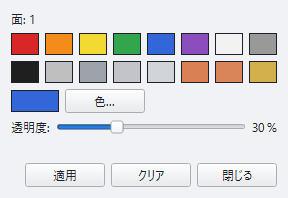
図 12-13 外観のダイアログ。上に対象（ 面: 1）、色の見本（よく使う色と、材料の色）、［透明度］です。［適用］を押します。
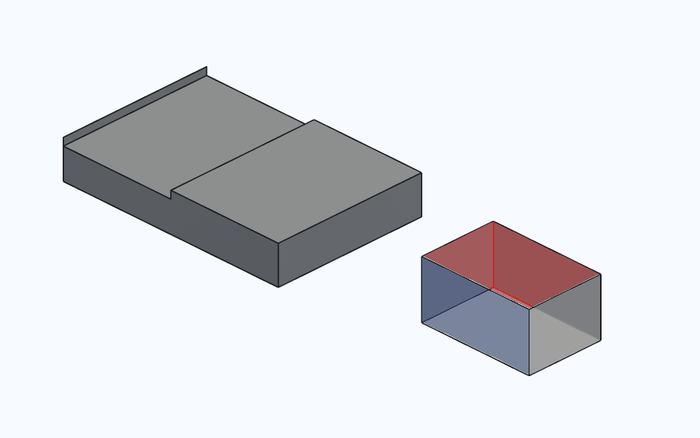
図 12-14 箱の前の面に、青で透明度 30 % を適用したところ。ほかの面と、赤い上面はそのままです。


色は、面 → ボディ → 材料の順に優先されます。面に付けた色が、ボディの色に勝ちます。
［クリア］（か［外観をクリア］）は、選んだ面・ボディに付けた色を消して、材料の色に戻します。
外観の変更は、1 回が 1 つの Undo の項目で、ドキュメントに保存されます。形は再計算されません。
STEP にエクスポートすると、ボディと面の色が入ります。読み戻しても同じ色になります。
12.6 エラーを検索
［エラーを検索］は、ボディの形状の欠陥を探します。取り込んだ形（STEP など）や、極端な寸法で作った形を確かめるときに使います。
リボンの［検査］タブ →［解析］パネル →［エラーを検索］をクリックします。
必要なら、しきい値を変えます。［微小エッジの長さがこれより短い］（既定
0.001 mm）・［スライバー面の幅がこれより小さい］（0.01 mm）・［ギャップ（許容差）がこれより大きい］（0.001 mm）と、［自己交差を調べる］のチェックです。［検索］を押します。検査の間は、ボタンが［停止］になり、押すと中止できます。
結果が表に並びます。下に「
エラー 0 件と警告 1 件が見つかりました。」のように件数が出ます。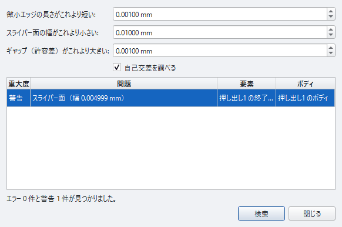
図 12-15 題材の左の板の、幅 0.005 mm の細い面を見つけたところ。［重大度］は［警告］、［問題］は スライバー面（幅 0.004999 mm）です。表の行を選ぶと、ビューでその要素（面・エッジ・頂点）が選択の色で強調されます。検索が終わった時点では、問題のあるすべての要素が選ばれます。ダイアログは開いたままなので、ビューを回したり拡大したりして、強調された要素を確かめられます。

問題が無いときは「問題は見つかりませんでした。」と出ます。
| 重大度 | 出る文 | 内容 |
|---|---|---|
| ［エラー］ | 不正なトポロジまたはジオメトリ（…） | 形のデータが矛盾しています |
| ［エラー］ | 自己交差 | 面や稜線が自分自身と交わっています |
| ［エラー］ | エッジの曲線が面に乗っていません（…） | エッジと面がずれています |
| ［エラー］ | ソリッドのシェルが閉じていません・フリー エッジ: 1 つの面だけが使っています | 開いた面（穴の空いたソリッド）です |
| ［エラー］ | 面の向きが揃っていません（向きが逆の面があります） | 面の向きが食い違っています |
| ［警告］ | 微小エッジ（… mm） | しきい値より短いエッジです |
| ［警告］ | スライバー面（幅 … mm） | しきい値より細い面です |
| ［警告］ | ギャップ: 許容差 … mm | 許容差がしきい値より大きい頂点・エッジです |
| ［警告］ | … 個の開いたシートが互いに接しており、縫合できます | 開いたシートどうしが接しています |
12.7 領域のプロパティ
［領域のプロパティ］は、スケッチの閉じた領域か、平らな面の断面の特性（面積・図心・断面二次モーメントなど）を求めます。梁の断面の強度計算に使います。
ブラウザのスケッチを選びます（スケッチを編集中なら、そのスケッチです）。平らな面の断面を知りたいときは、ビューでその面を選びます。
リボンの［検査］タブ →［計測］パネル →［領域のプロパティ］をクリックします。
［スケッチ］のコンボボックスで対象を選びます。閉じた領域が一覧に並びます。計算に入れる領域にチェックを入れます（合計が出ます）。
［計算］を押します。
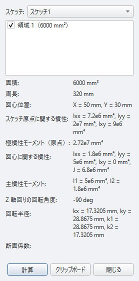
図 12-16 板の外形のスケッチ（ 領域 1、6000 mm²）の計算結果。［クリップボード］で値をコピーできます。

値は、［面積］・［周長］・［図心位置］・［スケッチ原点に関する慣性］（
Ixx・Iyy・Ixy）・［極慣性モーメント（原点）］・［図心に関する慣性］・［主慣性モーメント］・［Z 軸回りの回転角度］・［回転半径］です。値はスケッチの座標系で出ます（Inventor と同じです）。平らな面を選んだときは、
選択した面の項目が出ます。値は、図心を原点にした面の座標系で出て、［断面係数］も出ます。円弧の領域も、近似せずに厳密に計算します。穴のある領域は、穴を引いた値です。
12.8 断面で内側を確かめる
ボディの中の形（内側の穴・肉厚）は、断面図で確かめます。コマンドはリボンの［表示］タブ →［外観］パネルにあります。
［1/2 断面図］・［1/4 断面図］・［3/4 断面図］のどれかを押し、ブラウザで切る平面（原点の平面か作業平面）を選びます。オフセットで切る位置を決めます。
［断面を反転］で残す側を替えます。［切断面を塗りつぶす］は切断面を塗りつぶし（ボディごとの色）、［切断面のハッチング］は切断面に斜線を引きます。
［断面図を終了］で、断面を終えます。
断面図は表示だけで、ボディは切りません。ボディを切るには分割を使います。詳しい手順と写真は第 2 章にあります。切り口の面積・断面二次モーメントは、領域のプロパティで求められます。
12.9 次に読む章
ボディごとの材料・名前を付けるとき: 第 8 章 ボディの操作
質量や体積をプロパティにリンクするとき: 第 10 章 パラメータと式
STEP に色や名前を付けて書き出すとき: 第 13 章 ファイル・第 26 章 他の解析プログラムに形を渡す